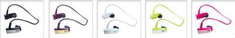
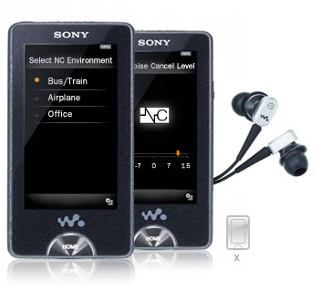
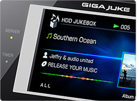
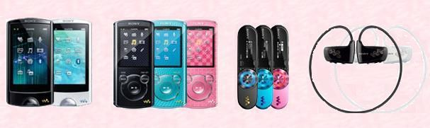
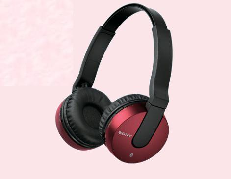

GAMA WALKMAN® de Sony 2011
Llegó el momento de renovar los Walkman, y como no podía ser de otra forma, deslumbran con tan sólo mirarlos. Pantalla táctil high response de 2,8 con una calidad sonora espectacular, diseños novedosos llenos de color, siempre elegantes y con gran autonomía para poder disfrutarlos mucho tiempo.
Una gama amplia que nos permitirá elegir aquel que más se adapte a nuestras necesidades. Tecnologías Clear Audio y el amplificador digital con tecnología S-Master MX que nos garantizan ese sonido satisfactorio de gran calidad. Transmisión de audio y el intercambio de imágenes mediante Bluetooth®. Funciones divertidas como el modo karaoke. Modo Lyrics para representar letras de canciones en pantalla de manera sincronizada con la música. Portátiles y lavables, sin cables que se enreden, cómodos y ligeros de llevar... en definitiva, hay un Walkman Sony mp3 y mp4 que seguro se adapta a tu ritmo de vida esperando para que disfrutes con una de las cosas que más te gusta. Escuchar música como se tiene que oir.


Donde estamos

Sovitel Electrónica, servicio Sony Bilbao. Las marcas y logos son propiedad de sus titulares y están protegidos por las leyes del copyright.
Walkman Sony 2009
Sony, inventor del Walkman, aparato que dió libertad para los amantes de la música, nos ofrece un nuevo instrumento para poder disfrutar de la música con total libertad. Se trata del nuevo reproductor MP3: el WALKMAN® Serie W.
Compacta, ligera y con su diseño de tendencia todo-en-uno, la Serie W WALKMAN® es el compañero perfecto que te acompañará en todo momento y en cualquier lugar. Con la calidad incomparable del sonido Sony, con la carga rápida de batería de tres minutos y noventa de reproducción, batería de larga duración de aproximadamente 12 horas de música (a 128 kbps) y 2 GB de almacenamiento(aproximadamente 32 horas de música). Es sin duda un paso más en el compromiso de Sony con los amantes de la música hayá donde se encuentren.

WALKMAN® de Sony
Los reproductores de mp3 y mp4 WALKMAN®, cuentan con la experiencia de más de 50 años en la vanguardia por satisfacer y ocupar un lugar privilegiado en la mente de cuaquier persona amante del sonido en su estado más puro y cristalino. Es todo un placer poder disfrutar en su máximo esplendor, de la nitidez y precisión de un sonido y de una imagen excepcionales. Para ello cuentan con una pantalla Pantalla OLED superbrillante, capaz de visualizar vídeos con un contraste de 10.000:1, dando como resultado unos colores reales como la vida misma. No podemos olvidar tampoco la esencia de la palabra Walkman, siempre sinónimo de sonido en alta fidelidad.

Giga Juke de Sony
Tener toda la colección de música almacenada, etiquetada y lista para reproducirse en un solo sistema Hi-Fi. es posible gracias al Giga Juke de Sony. Se podrá escuchar la música desde cualquier cualquier habitación, sin cables y con una reproducción de sonido superior. El sistema Giga Juke almacena miles de canciones para que pueda transmitirlas por toda la casa gracias a un sistema muy fácil de configurar facilitando la posibilidad de escuchar decenas de miles de canciones almacenadas en su disco duro desde cuaquier lugar de la casa.

Servicio Técnico Oficial Sony
SOVITEL ELECTRÓNICA
Tellagorri nº 10
48012 BILBAO
(zona Basurto)
94 4275617

Auriculares Bluetooth de Sony
Sony presenta su nueva colección de Auriculares con Bluetooth para llenar de música los momentos navideños.Actualmente 2 de cada 10 auriculares que se compran incorporan la tecnología Bluetooth y este es un mercado en expansión que en 2013 creció un 24%. Sony apuesta por los auriculares con Bluetooth, la mayoría de sus auriculares incorporan esta tecnología, y es que cada vez más usuarios utilizan este tipo de auriculares atraídos por sus ventajas; son mucho más cómodos, sin cables, y proporcionan una experiencia de libertad de escucha total. Además, un gran número de los auriculares con Bluetooth de Sony llevan como accesorio suministrado, un cable de audio para que, si se acaba la batería, no nos quedemos sin música.
Los auriculares Bluetooth Extra Bass XB950BT cuentan con impresionantes diafragmas de neodimio de 40 mm. Gracias al control de respuesta de ritmo y al refuerzo de graves, aumenta el sonido de las frecuencias bajas para ofrecer una experiencia multisensorial sin salir de casa. Su Bluetooth integrado permite bailar al ritmo de la música favorita almacenada en el Smartphone o tablet sin que ningún cable estropee este momento.
Gracias a la reducción de ruido de los auriculares MDR-ZX550BN se puede escuchar la música favorita con una claridad cristalina y evitando distracciones. Permite disfrutar de listas de reproducción hasta 25 horas sin parar. Por su parte, los auriculares MDR-1RBT con Bluetooth inalámbrico permiten olvidarse de los cables y disfrutar de la música con toda comodidad. Creados a través de una estrecha colaboración con figuras de la industria musical como Katy B y Magnetic Man, los MDR-1RBT reproducen la frecuencia adecuada y dejan apreciar los bajos enriquecidos y las notas más altas de las melodías tal y como las concibieron los artistas en el proceso de creación. Otros auriculares presentados por Sony son los MDR-10RBT y los Bluetooth internos AS800BT, resistente a salpicaduras y sin enredos.
